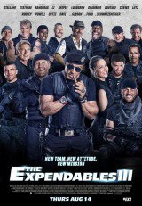

LIBRANOS DEL MAL
Un detective de la policía de Nueva York se ve envuelto en la investigación de una serie de extraños crímenes relacionados con un oscuro culto demoníaco.

LOS MERCENARIOS 3
Barney (Stallone), Navidad (Statham) y el resto del equipo se verán las caras con Conrad Stonebanks (Gibson), quien años atrás fundó el grupo de Los Mercenarios junto a Barney. Stonebanks se convirtió en un mercenario despiadado y sin ningún tipo de escrúpulo, lo que provocó la ruptura con Barney, quien se vio obligado a matarle... o al menos eso pensaba. Stonebanks eludió la muerte una vez más, y planeó su venganza contra Barney, acabando de paso con todo el grupo. Barney decide entonces que para enfrentarse a viejos enemigos hay que meter sangre nueva en el grupo, por lo que realiza una serie de interesantes fichajes, más rápidos, más fuertes y conocedores de las últimas tecnologías.LA BELLA Y LA BESTIA
El director de culto Christophe Gans (El pacto de los lobos, Silent Hill) dirige esta adaptación de la famosa historia de La bella y la bestia. Basada en la obra original de Gabrielle-Suzanne Barbot de Villeneuve, esta versión presenta una historia más mágica y adulta.LA GRAN ESTAFA AMERICANA
l argumento de 'American Bullshit' se presenta así: Una operación encubierta del FBI en los años setenta, llamada Abscam, lleva tras la pista de varios miembros del Congreso del os Estados Unidos.